How to use
From the first Wi-Fi to cable recovery, in short steps. Every setting mentioned here is in the clock's panel, on the tab indicated.
From the factory clock to Pomodoro
It takes about 10 minutes, with no cable and without opening the clock. It only works on the SmallTV Ultra (ESP8266). Do not flash it on the SmallTV Pro (ESP32) or other models.
Install the firmware
Download the file
Get the latest
.binfrom the releases page (or the download button on the home page). Use the stable version.Open the factory clock's page
In your browser, open the clock's address (the IP shown on its screen) and go to Firmware Upgrade.
Upload the file
Pick the
.bin, upload it and wait for the clock to restart by itself. The Pomodoro screens appear next.
Got ERROR[4]: Not Enough Space? The factory update space varies between units. Fix it in two steps:
- First upload the loader
smalltv-mod-loader.bin(giovi321/smalltv-mod v2.8.2) through the same Firmware Upgrade. The screen goes black with the loader, and that is normal: the clock is on and waiting for the next step. - Join the open network
SmallTV-Loaderand upload the Pomodoro.binathttp://192.168.4.1/update(from your phone or computer). Do not unplug it until the Pomodoro screen (the Wi-Fi QR code) appears. The clock restarts by itself after the upload.
Photos and GIFs from the factory firmware: installing formats the file storage, so the original's photos are not kept. Settings and the saved Wi-Fi stay. Upload the photos again from the panel afterwards.
Connect the clock to Wi-Fi
If the clock already had your home Wi-Fi saved by the factory firmware, it joins by itself and you can skip to finding the panel. If it did not:
Scan the QR on the screen
The screen shows STEP 1/2 with a QR. Point your phone's camera at it and confirm joining the
SmallTV-Pomodoronetwork. The QR already carries that network's temporary password.No camera, or the QR did not scan? Join
SmallTV-Pomodorofrom your phone's Wi-Fi list and type the 8-character password shown on the screen.Open the portal
Once your phone is connected, the screen changes to STEP 2/2. The portal usually opens by itself. If it does not, scan the second QR or open
http://192.168.4.1/.Pick your home Wi-Fi
Select your network and type its password. Only 2.4 GHz networks work (the clock has no 5 GHz). The clock restarts and shows the panel's address.
If the Wi-Fi does not connect, do not unplug the clock to try again: 3 restarts in a row, each under 30 s, open recovery mode (safe, but confusing).
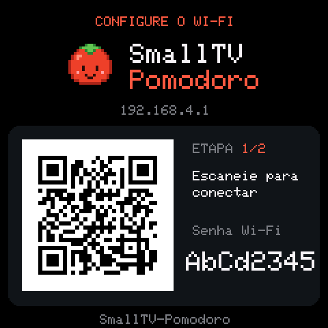
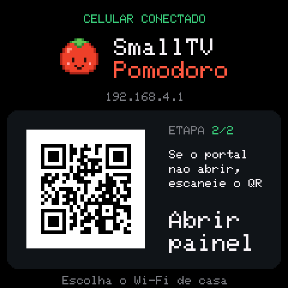
Screens rendered by the project's simulator. The QR does not carry your home Wi-Fi password: it is only typed in the portal. To change network later: Settings → Reset Wi-Fi.
Find the panel
The panel is the clock's page in your browser, where all the settings live. It opens on any device on the same network and has 4 tabs: Clock, Focus, Photos, Settings.
By name
Type http://smalltv.local/ (with the http://, otherwise some browsers run a search) and bookmark it. It works on Windows 10/11, macOS, iOS and Linux with Avahi.
With a second clock on the network, its name is smalltv-2.local, then -3… The smalltv-xxxx.local name (4 digits from the chip) always works.
By IP (the safest)
The clock shows its IP at the bottom of most faces. Open http://IP/ and bookmark it. This is the way for Android phones, which may not find .local names.
To keep the IP from changing, reserve it in the router: look for DHCP → Address reservation (or Static lease) and pick the clock by its name smalltv-xxxx or its MAC.
smalltv.local only opens sometimes and my computer is on 5 GHz
Many routers do not carry multicast from the 2.4 GHz side to the 5 GHz side. The clock is always on 2.4 GHz, so its answer never reaches the computer (only a direct copy does, and on Windows it may land in another program, such as Chrome, instead of the system: that is why it only works sometimes).
- Put the computer on the 2.4 GHz network: it works there.
- Or use the IP bookmark (above).
- Some routers have an option for this: IGMP snooping, multicast enhancement or mDNS/Bonjour forwarding.
Using the clock
Everything is set in the panel and saves by itself as you change it.
Pomodoro: focus, break, reach the goal
Open the Focus tab and pick What I will do while focusing: read, study, code, tasks or draw. The clock shows the activity's object next to the tomato.
Set the Durations (focus, short break, long break, long break every N sessions) and the Daily focus goal. Turn on Start the next phase automatically if you want phases to follow each other.
Tap Start/pause (or press the space bar on a computer). Skip phase moves on, Reset starts over. When a phase ends the tomato jumps for joy.
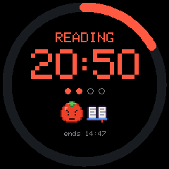
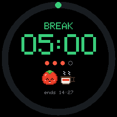
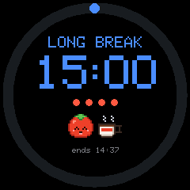
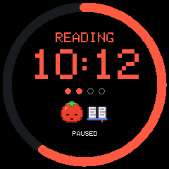
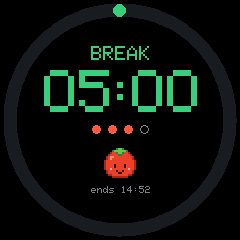
History and achievements: the clock keeps a year of daily sessions. The Focus tab shows your streak of days on goal, the Garden (each square is a day; red = goal reached) and 10 Achievements. The little plant next to the tomato grows with every day in a row on goal, up to the golden tomato at 7 days.
Share card: Share my day makes a pixel art card of your sessions and streak. On a phone it opens the share menu.
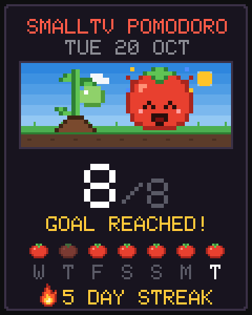
Built-in faces and the gallery
On the Clock tab, Built-in lists the faces that come with the firmware: tap one to use it. Preview on clock (15 s) tries it without saving.
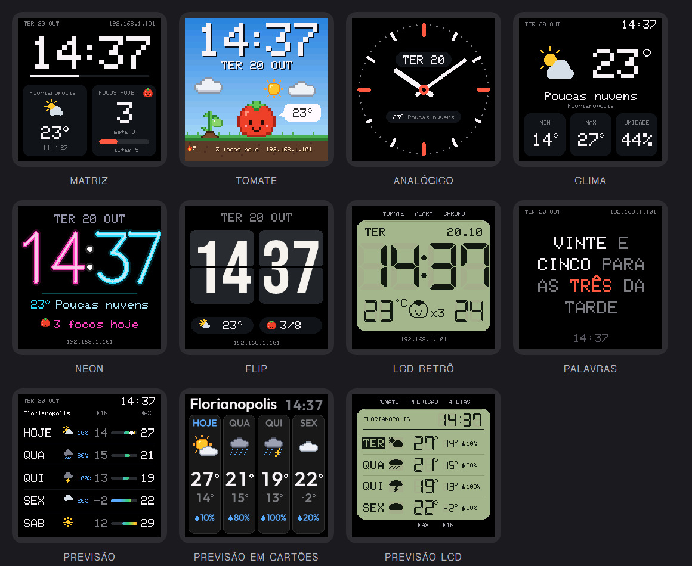
Install a new face
Under Clock → More faces, tap Open the online gallery and choose one (the gallery has previews).
Or download the
.jsonfrom the website's gallery and use Install from a file in the panel (pick the.jsonand, if you have it, the.pngpreview).The face is stored on the clock with no firmware update. Some need a minimum firmware version; the panel tells you.
Rotation: under Rotate faces choose how often it changes (1 min to 1 h; Never turns it off). Then tap a face and choose Add to rotation (2 or more).
Photos and GIFs (album)
On the Photos tab, tap Upload photos or GIFs. Photos are cropped to 240×240 in your browser before uploading; GIFs are sent as they are (240×240 is ideal).
Under Clock → What to show pick Photo album or Alternate clock and album (and the seconds per item).
On the Photos tab, Show now displays an image right away and Delete removes it.
If the clock says there is not enough memory for a GIF, use a smaller one (240×240, fewer frames). That is the chip's limit: the decoder needs about 24 KB of free contiguous memory.
Weather and rain warning
Under Settings → Weather, turn on Show weather, type the city and tap Search city. Weather comes from Open-Meteo, with no sign-up or key.
When you pick the city, the time zone (with daylight saving) comes along. If the clock's does not match, the panel offers to fix it.
Turn on Warn when rain is coming: if rain should start within the next hour, the clock shows “rain 15 min” and the tomato opens its umbrella. Use Temperature in °F for Fahrenheit.
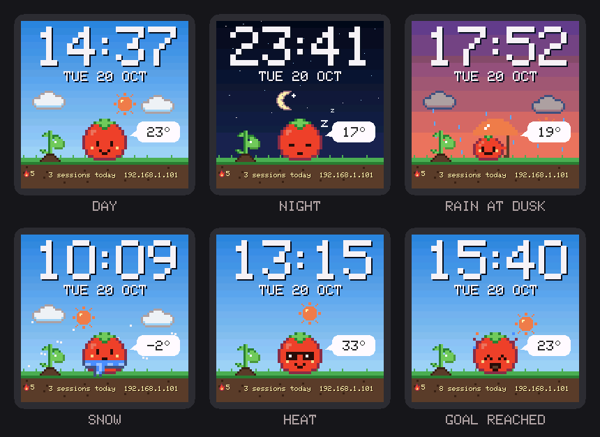
Brightness: night, by the sun and warm color
- Night brightness (Settings → Brightness): the clock dims at night, at the Brightness at night level you choose.
- Use fixed hours (From / Until) or Follow the sun, from sunset to sunrise in your city. For that the city must be set under Weather; until then the fixed hours apply.
- Warm color at night: the screen loses some blue along with night brightness, without changing the image. 0 turns it off, and Preview for 15 s shows the effect.
Green tint of the LCD faces
The Retro LCD, Forecast LCD and world map faces imitate a wristwatch's green display. With one of them in use, the Current face card shows the option Green tint on the LCD faces: tick it to turn the green tint on, untick it to go back to normal colors. It only applies to those faces; the QR screens always stay black and white.
Alexa and end-of-phase notices
In Settings, turn on Control with Alexa. With an Echo on the same network, say “Alexa, discover devices”: the clock shows up as three lights (Pomodoro, Break and Long break). No account or cloud needed.
Pomodoro: “turn on” starts or resumes focus, “turn off” pauses and, again, ends it; “set Pomodoro to 40%” focuses for 40 minutes. Break and Long break: “turn on” starts the break, “turn off” goes back to focus.
In the Alexa app's routines you can use your own phrases, like “Alexa, focus time”.
To make Alexa speak when a phase ends
Enable the Virtual Smart Home skill and create a URL Routine Trigger at virtualsmarthome.xyz (Voice Monkey and IFTTT also work).
In the panel, paste the address into Notify when focus ends and/or Notify when the break ends and tap Save. Test focus and Test break check it.
In the Alexa app, create a routine that starts with that trigger and makes Alexa say “Pomodoro done”.
Language
Under Settings → Language choose Portuguese, English or Spanish. It applies to the panel and the clock's screen (dates, weather, Pomodoro, the Words face).
Update, back up and repair
Updates: stable × test versions
When there is a new version the panel tells you and shows what changed. Tap Update now and wait for the clock to restart (do not unplug it). You can also go to Settings → Update firmware. Before switching, the clock checks the file and refuses one that is incomplete or wrong; over the network it only accepts firmware signed by this project.
Stable
The default. It is what the website's download button gives and what the panel offers. Pick this if you just want the clock to work.
Test versions
Turning on Get test versions (Settings) makes the panel also offer test versions, before everyone else. They may have problems. Back up first and only use them if you know recovery mode. All of them are listed under Releases.
Backup and restore
In Settings, tap Back up. The panel saves a
smalltv-backup-….jsonfile on your device with settings, focus history, downloaded faces, notifications, photos and GIFs. It does not include passwords or Wi-Fi details.To go back, tap Restore backup and pick the file. Current settings and history are replaced. If a face is not in the gallery, install it again from its file; photos that do not fit are left out and the panel tells you.
Panel password
In Settings, Panel and /update password: type a password (up to 23 characters) and Save password. From then on the browser asks for the user admin and that password when you open the panel. Empty = no password. To change it, also enter the current one. Alexa keeps working without it, since it can only start and stop the timer.
Forgot it? Use recovery mode.
Diagnostics: what each line means
At the bottom of the Settings tab. If the clock restarts by itself, the reason shows up here.
| Up for | How long the clock has been on without restarting. |
|---|---|
| Last restart | Why it restarted: plugged in, restarted by the clock itself (update or setting), crashed (with the error code and address) or reset externally (by something outside the clock). |
| Last full-screen redraw | How long the last full-screen redraw took, in milliseconds. |
| Longest clock stall | The longest time the clock went without responding, and the cause (weather, alert or other). Long, frequent stalls usually come from poor Wi-Fi. |
| Last start | How long each start-up step took: screen, Wi-Fi (“fast” if it reconnected straight away), time and NTP. |
| Wi-Fi signal | In dBm: good (−60 or more), fair (down to −72), weak (below that). Below −75 dBm usually explains weather and updates failing. |
| Free memory | The chip's memory now, the lowest since start, the largest contiguous block and the fragmentation. A small block is what makes a GIF not fit. |
| Last crash | Only shown if there was a crash: its number, cause, version and how long it had been on. Clear erases the record. |
Also in Settings, See what is using space shows the file storage (photos and GIFs, downloaded faces, panel, history) and lets you delete what you do not need. The Anti-ghosting adjustment is in the FAQ.
Recovery mode
If the clock freezes or keeps restarting (for example after an update), it opens its own network, with no button needed:
Unplug and plug the clock back in 3 times in a row, leaving it on for less than 30 seconds each time.
On the third time, the screen shows RECOVERY MODE with a QR. Join the
SmallTV-Recuperacaonetwork (the QR carries the temporary password; it is also on the screen).Open
http://192.168.4.1(the second QR does that). It asks for no password. There you can upload a firmware, reset settings to default, forget the Wi-Fi or download your focus history.Restart normally goes back to the clock.
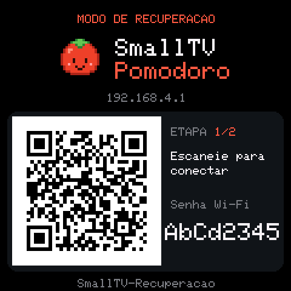
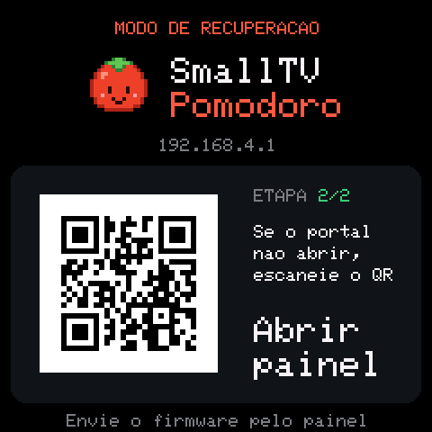
The screen does not even turn on and recovery will not open?
You can reflash over a cable, with a 3.3 V USB-TTL adapter, without losing photos or settings (on clocks already on the 4M2M storage). In short: connect GND, TXD0→RX, RXD0→TX and GPIO0→GND (only while powering on); back up with esptool read_flash 0x0 0x400000 and flash with esptool write_flash 0x0 smalltv-pomodoro-vX.Y.Z.bin. erase_flash only as a last resort: it erases everything. Without a USB-TTL adapter there are alternatives (NodeMCU/ESP32, Raspberry Pi, Arduino Uno). Step by step with wiring, commands and common errors: cable recovery guide.
Go back to the original firmware
Download GeekMagic's
.binfrom GeekMagicClock/smalltv-ultra.Open recovery mode (3 power cycles) and upload the file there. Settings → Update firmware will not work: it only accepts firmware signed by this project.
The original firmware expects photos in another part of the memory; the Pomodoro ones are left behind (it may format or reuse that area). Back up first if you want to keep them.
Common problems
smalltv.local does not open.
Check that you typed http:// in front. If the computer is on the 5 GHz network, the clock (always on 2.4 GHz) may not be seen: put the computer on 2.4 GHz or use the IP shown on the clock's screen, ideally reserved in the router. On Android, always use the IP. Details in Find the panel.
The GIF does not show: “not enough memory”.
The GIF decoder needs about 24 KB of free memory in one block, and the chip has little. Use a 240×240 GIF with fewer frames or colors. Under Settings → Diagnostics, the largest block shows how much is available. Restarting the clock usually frees it up.
The screen shows a ghost image in the background (VCOM).
It happens when a face stays on for a long time. In Settings, open the Anti-ghosting adjustment (Panel voltage), look closely and straight at the gray patterns on the clock and move the slider until they stop flickering: that is where ghosting is lowest. The default is 0.850 V. Save or Cancel at the end.
Colors are wrong, swapped or negative.
Under Settings → Device screen use Test colors on the clock: the first bar should be red and the background black. Red and blue swapped: change the Color order. White background or negative colors: toggle Invert colors. If the image is upside down, use Rotate 180°.
The clock restarted by itself.
See the reason under Settings → Diagnostics → Last restart (and Last crash, if any). A restart with weak Wi-Fi often improves by moving the clock closer to the router. If it keeps happening, note the error and address shown and open an issue on GitHub. If it no longer boots, use recovery mode.
The 1.24 update erased my photos. Is that expected?
Yes, once. The first version on the new memory layout (4M2M, which gives the program more room) formats the file storage on the first start: photos, GIFs and downloaded faces are erased; settings, password, Wi-Fi, history, rotation and notifications stay. Before updating, the panel warns you and saves a full backup on your device: after the update, use Restore backup with the smalltv-backup-*.json file in your downloads. If you updated another way and have no backup, the photos need to be uploaded again.
The clock does not join Wi-Fi.
Make sure the network is 2.4 GHz and the password is right. To choose another network, use Settings → Reset Wi-Fi (in the panel) or forget the Wi-Fi in recovery mode: the clock restarts and opens the QR setup again.
Weather or updates fail.
Check the Wi-Fi signal in Diagnostics: below −75 dBm is the most common cause. Move the clock closer to the router and check that a city is set under Weather.